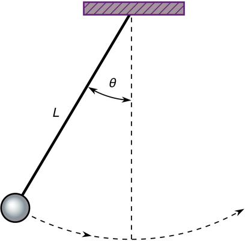
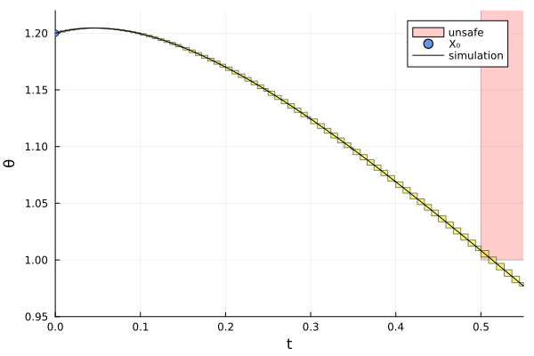

Inverted Pendulum
The Inverted Pendulum benchmark is a classical model of motion.
using ClosedLoopReachability
import DifferentialEquations, Plots, DisplayAs
using ReachabilityBase.CurrentPath: @current_path
using ReachabilityBase.Timing: print_timed
using ClosedLoopReachability: SingleEntryVector
using Plots: plot, plot!, xlims!, ylims!The following option determines whether the falsification settings should be used. The falsification settings are sufficient to show that the safety property is violated. Concretely, we start from an initial point and use a smaller time horizon.
const falsification = true;Model
A ball of mass $m$ is attached to a massless beam of length $L$. The beam is actuated with a torque $T$. We assume viscous friction with coefficient $c$.
The governing equation of motion can be obtained as follows:
\[\ddot{θ} = \dfrac{g}{L} \sin(θ) + \dfrac{1}{m L^2} (T - c \dot{θ})\]
where $θ$ is the angle that the link makes with the upward vertical axis, $\dot{θ}$ is the angular velocity, and $g$ is the gravitational acceleration. The state vector is $(θ, \dot{θ})$. The model constants are chosen as $m = L = 0.5$, $c = 0$, and $g = 1$.

vars_idx = Dict(:states => 1:2, :controls => 3)
const m = 0.5
const L = 0.5
const c = 0.0
const g = 1.0
const gL = g / L
const mL = 1 / (m * L^2)
@taylorize function InvertedPendulum!(dx, x, p, t)
θ, θ′, T = x
dx[1] = θ′
dx[2] = gL * sin(θ) + mL * (T - c * θ′)
dx[3] = zero(T)
return dx
end;We are given a neural-network controller with 2 hidden layers of 25 neurons each and ReLU activations. The controller has 2 inputs (the state variables) and 1 output ($T$).
path = @current_path("InvertedPendulum", "InvertedPendulum_controller.polar")
controller = read_POLAR(path);The control period is 0.05 time units.
period = 0.05;Specification
The uncertain initial condition is $θ \in [1, 1.2], \dot{θ} \in [0, 0.2]$.
X₀ = BallInf([1.1, 0.1], 0.1)
if falsification
# Choose a single point in the initial states (here: the top-most one):
X₀ = Singleton(high(X₀))
end
U₀ = ZeroSet(1);The control problem is:
ivp = @ivp(x' = InvertedPendulum!(x), dim: 3, x(0) ∈ X₀ × U₀)
prob = ControlledPlant(ivp, controller, vars_idx, period);The safety specification is that $θ ∈ [0, 1]$ for $t ∈ [0.5, 1]$ (i.e., the control periods $10 ≤ k ≤ 20$). A sufficient condition for guaranteed violation is to overapproximate the result with hyperrectangles.
unsafe_states = HalfSpace(SingleEntryVector(1, 3, -1.0), -1.0)
function predicate_set(R)
t = tspan(R)
return t.lo >= 0.5 && t.hi <= 1.0 &&
overapproximate(R, Hyperrectangle) ⊆ unsafe_states
end
function predicate(sol; silent::Bool=false)
for F in sol
t = tspan(F)
if t.hi < 0.5 || t.lo > 1.0
continue
end
for R in F
if predicate_set(R)
silent || println(" Violation for time range $(tspan(R)).")
return true
end
end
end
return false
end
if falsification
k = 11 # falsification can run for a shorter time horizon
else
k = 20
end
T = k * period
T_warmup = 2 * period; # shorter time horizon for warm-up runAnalysis
To enclose the continuous dynamics, we use a Taylor-model-based algorithm:
algorithm_plant = TMJets(abstol=1e-7, orderT=4, orderQ=1);To propagate sets through the neural network, we use the DeepZ algorithm:
algorithm_controller = DeepZ();The falsification benchmark is given below:
function benchmark(; T=T, silent::Bool=false)
# Solve the controlled system:
silent || println("Flowpipe construction:")
res = @timed solve(prob; T=T, algorithm_controller=algorithm_controller,
algorithm_plant=algorithm_plant)
sol = res.value
silent || print_timed(res)
# Check the property:
silent || println("Property checking:")
res = @timed predicate(sol; silent=silent)
silent || print_timed(res)
if res.value
silent || println(" The property is violated.")
else
silent || println(" The property may be satisfied.")
end
return sol
end;Run the falsification benchmark and compute some simulations:
benchmark(T=T_warmup, silent=true) # warm-up
res = @timed benchmark(T=T) # benchmark
sol = res.value
println("Total analysis time:")
print_timed(res)
println("Simulation:")
res = @timed simulate(prob; T=T, trajectories=falsification ? 1 : 10,
include_vertices=!falsification)
sim = res.value
print_timed(res);Flowpipe construction:
0.215326 seconds (3.18 M allocations: 231.968 MiB, 11.95% gc time)
Property checking:
Violation for time range [0.5, 0.509134].
0.272544 seconds (291.33 k allocations: 21.657 MiB)
The property is violated.
Total analysis time:
0.491070 seconds (3.47 M allocations: 254.489 MiB, 5.24% gc time)
Simulation:
0.360272 seconds (521.31 k allocations: 38.222 MiB)Results
Script to plot the results:
function plot_helper()
vars = (0, 1)
fig = plot(ylab="θ")
unsafe_states_projected = cartesian_product(Interval(0.5, 1.0),
project(unsafe_states, [vars[2]]))
plot!(fig, unsafe_states_projected; color=:red, alpha=:0.2, lab="unsafe")
plot!(fig, sol; vars=vars, color=:yellow, lab="")
initial_states_projected = cartesian_product(Singleton([0.0]), project(X₀, [vars[2]]))
plot!(fig, initial_states_projected; c=:cornflowerblue, alpha=1, lab="X₀")
if falsification
xlims!(0, T)
ylims!(0.95, 1.22)
else
xlims!(0, T)
ylims!(0.55, 1.3)
end
lab_sim = falsification ? "simulation" : ""
plot_simulation!(fig, sim; vars=vars, color=:black, lab=lab_sim)
fig = DisplayAs.Text(DisplayAs.PNG(fig))
end;Plot the results:
fig = plot_helper()
# savefig("InvertedPendulum.png") # command to save the plot to a file